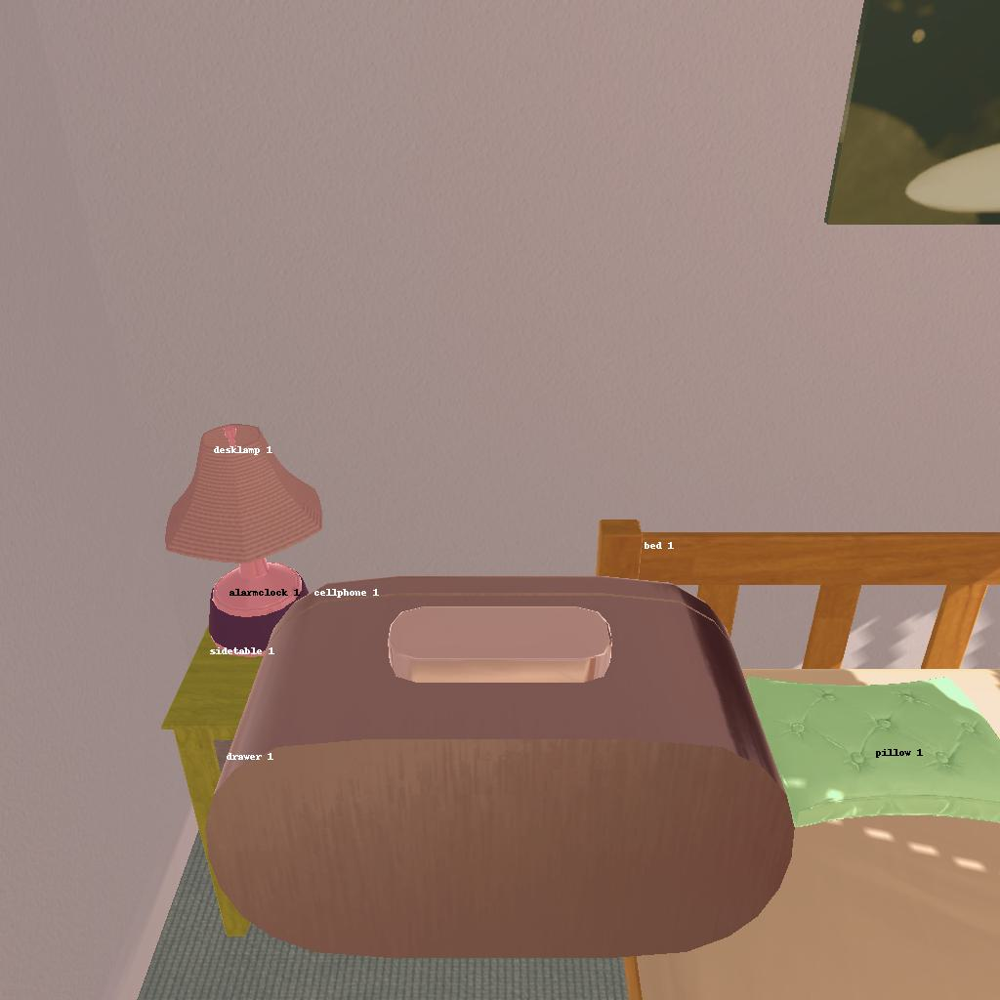

---------------------------------------------------------task: 0---------------------------------------------------------
--------------------------------------------------------------------------------------------------------------------------------------------------------------------
--------------------------------------------------------------------------------------------------------------------------------------------------------------------
Step:--------------------------------------------------------------------------7-------------------------------------------------------------------------------
----------------------------------------
VLM Prompt:
Image1:
Image2:
**Instruction**
1. Analyze the provided image to identify all visible household objects, focusing on those relevant to the task description "examine the alarmclock with the desklamp."
2. Use the analysis of the image and the task hint "The agent must find an object of the desired type, locate and turn on a light source with the desired object in-hand." to answer the question: what is the most reasonable action in the choices for the task description "examine the alarmclock with the desklamp"?
4. Decide and write the answer using the template: The answer is: (i): , where i is the real number. If there is no desired object in the image, search every place based on **Initial Observation** to find the object. And if no one is exactly correct, choose a similar answer.
**Initial Observation**
You are in the middle of a room. Looking quickly around you, you can see bed (1), sidetable (1), drawer (1-11), dresser (1), safe (1), laundryhamper (1), garbagecan (1)
**Answer Choices**
(1): go to bed 1
(2): go to drawer 1
(3): go to drawer 2
(4): go to drawer 3
(5): go to drawer 4
(6): go to drawer 5
(7): go to drawer 6
(8): go to drawer 7
(9): go to drawer 8
(10): go to drawer 9
(11): go to drawer 10
(12): go to drawer 11
(13): go to safe 1
(14): go to laundryhamper 1
(15): go to garbagecan 1
(16): put alarmclock 1 in/on sidetable 1
(17): use desklamp 1
(18): examine alarmclock 1
(19): examine sidetable 1
**Answer**
Let's think step by step by following the instructions.
----------------------------------------
----------------------------------------
Original Response:
Firstly, we need to identify all visible household objects relevant to the task description "examine the alarmclock with the desklamp." In Image 1, we can see an alarmclock labeled "alarmclock 1" on a surface labeled "drawer 2". In Image 2, we can see a desklamp labeled "desklamp 1" on a surface labeled "sidetable 1".
Now, according to the task hint, the agent must find an object of the desired type, which is the alarmclock, locate and turn on a light source, which is the desklamp, with the desired object in-hand. Since we have already identified both objects, the most reasonable action would be to turn on the desklamp to examine the alarmclock.
Therefore, the answer is: (17): use desklamp 1.
----------------------------------------
----------------------------------------
>>> Refine Original VLM Response and Get Pure Action: No action
----------------------------------------
-----------------------------------------------------------------
Running time: 11.385810613632202 seconds
Total Money: 0.20639
-----------------------------------------------------------------
-----------------------------------------------------------------
Text Observation:Nothing happens.
-----------------------------------------------------------------
UNSUCCEED